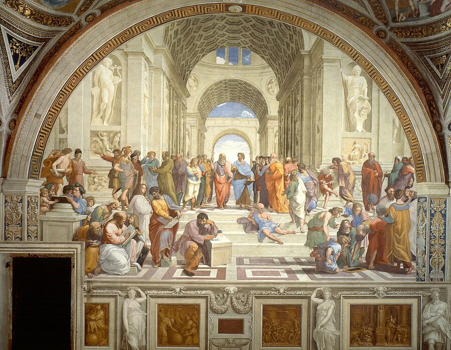

Language Foundations · World Languages · K–12
Latin Language Foundations
Latin was the administrative and intellectual lingua franca of the Mediterranean world for centuries, and remains the linguistic motherboard of law, science, medicine, and philosophy. Instead of relying on rigid word order, Latin embeds syntactic function directly into word endings through its elegant system of six cases.

How Latin Works: The Four Pillars
Word endings (cases), not word position, tell you who did what to whom. Order is used for rhythm and emphasis.
Nominative, Genitive, Dative, Accusative, Ablative, and Vocative precisely tag the grammatical role of every noun.
Long vowels (marked by macrons: ā, ē, ī, ō, ū) take twice as long to speak and can completely change a word's meaning.
Over 60% of English words and 90% of technical scientific terms trace directly to Latin roots (scribo, specto, corpus).
The Six Latin Cases: Decoding Word Roles
Every Latin noun changes its ending depending on its functional role in the thought:
| Case | Core Function | Example (1st Declension: Puella) | English Translation |
|---|---|---|---|
| Nominative | Subject (the doer of the action) | Puella cantat. | The girl sings. |
| Genitive | Possession / Origin ("of...") | Liber puellae. | The book of the girl (the girl's book). |
| Dative | Indirect Object ("to/for...") | Donum puellae do. | I give a gift to the girl. |
| Accusative | Direct Object (recipient of action) | Agricola puellam videt. | The farmer sees the girl. |
| Ablative | Adverbial ("by / with / from") | Cum puellā ambulat. | He walks with the girl. |
| Vocative | Direct address (speaking to someone) | O puella, audi! | O girl, listen! |
The Latin Word Order Transformer
In English, "The farmer loves the girl" is completely different from "The girl loves the farmer." But in Latin, watch what happens when we scramble the words:
Notice: Even if puellam appears first, its "-am" accusative ending guarantees she is the one loved, never the lover!
Classical Latin Sound Lab
Classical pronunciation (spoken in the Late Roman Republic by Cicero and Julius Caesar) differs from medieval Church Latin:
Letter C in Classical Latin
Always hard /k/, never /s/ or /tʃ/. Cicero was pronounced "Kee-keh-ro", and Caesar was "Kye-sar"!
Famous Latin Mottos & Recognition Quiz
[ˈkar.pɛ ˈdi.ɛm]
[ˈweː.niː ˈwiː.diː ˈwiː.kiː]
Roadmap for Future Latin Lessons
Navigating the declension families (-a, -us, consonant/i-stem, -us, -es) and mastering adjective agreement across genders.
Active and passive voices across all six tenses (Present, Imperfect, Future, Perfect, Pluperfect, Future Perfect) and the ablative absolute.
Reading Caesar's De Bello Gallico, Cicero's speeches, Virgil's Aeneid, and decoding modern scientific taxonomy.